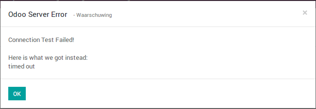

Test connection
Checks your credentials in one click


Want to make sure if the connection details are correct and if Odoo can automatically write them to the remote server? Simply click on the 'Test SFTP Connection' button and you will get message telling you if everything is OK, or what is wrong!